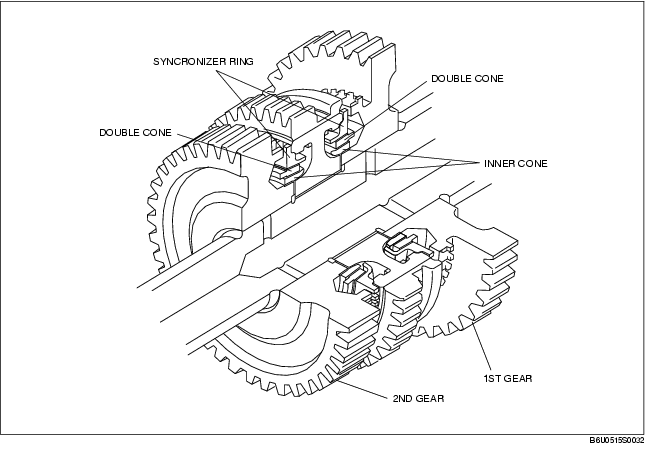

Double cone synchronizer mechanism structure [F35M-R]
Features
• A double cone synchronizer mechanism is used for the 1st and 2nd gears.
• The double cone synchronizer mechanism is a compact device capable of heavy duty meshing.
• The double cone synchronizer mechanism reduces meshing time and improves operation.
• The double cone synchronizer mechanism includes a synchronizer ring, a double cone, and an inner cone.
Structure
